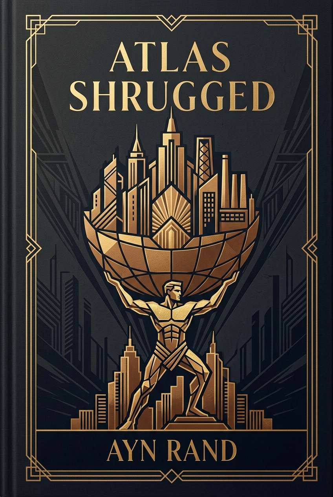

Autonomous Ball-Collecting Robot ↗
Robotics · PID · Motor IDOptical-bearing guidance, first-order DC motor transfer function identification, and cascaded PI speed/heading control loops for ±0.5–1 cm positioning.
Robotics & Embedded Systems Engineer
Engineering builds and hardware prototypes across robotics, digital logic, wireless telecom, and embedded systems.
Optical-bearing guidance, first-order DC motor transfer function identification, and cascaded PI speed/heading control loops for ±0.5–1 cm positioning.
Full end-to-end pipeline from 64-reed sensor matrix and PyTorch CNN corner tracking to an embedded IA-Marc V2 engine on Raspberry Pi 5. Complete build photos & CAD.
16-bit arithmetic logic unit built from first principles in Verilog, complete with automated verification testbench (7 + 8 = 15), assembler, and embedded video demo.
OpenAirInterface split DU on Jetson Orin Nano and Raspberry Pi 5 for lightweight UAV cells, over Ethernet, Wi-Fi and 5G backhaul. Paper submitted (2026).
Wallet-based ticketing infrastructure with Solana Pay under hackathon constraints; clean on-chain / off-chain boundary with sub-second finality.
I am a robotics and embedded systems engineer and a master's student in the 3D Vision Lab at Seoul National University (SNU). Before that, I was a research intern at KAUST (SeRBER lab), working on efficient vision models, NVIDIA Jetson deployment and a 5G testbed for UAV relay cells.
My background spans autonomous robotics, closed-loop control systems, custom PCB layout, and real-time firmware architectures, turning complex physical challenges into deterministic hardware with clean software abstractions.
Seoul National University (SNU) · M.S., 3D Vision Lab (2026–)
KAUST · Research intern, SeRBER lab (2026)
IMT Atlantique · Embedded Systems & Robotics
CPGE Pierre Corneille · Mathematics & Physics
Three formative books and curated selections I would recommend to a friend.


Interested in robotics, embedded systems, and innovative engineering collaborations.
marc.duboc@imt-atlantique.net copied!